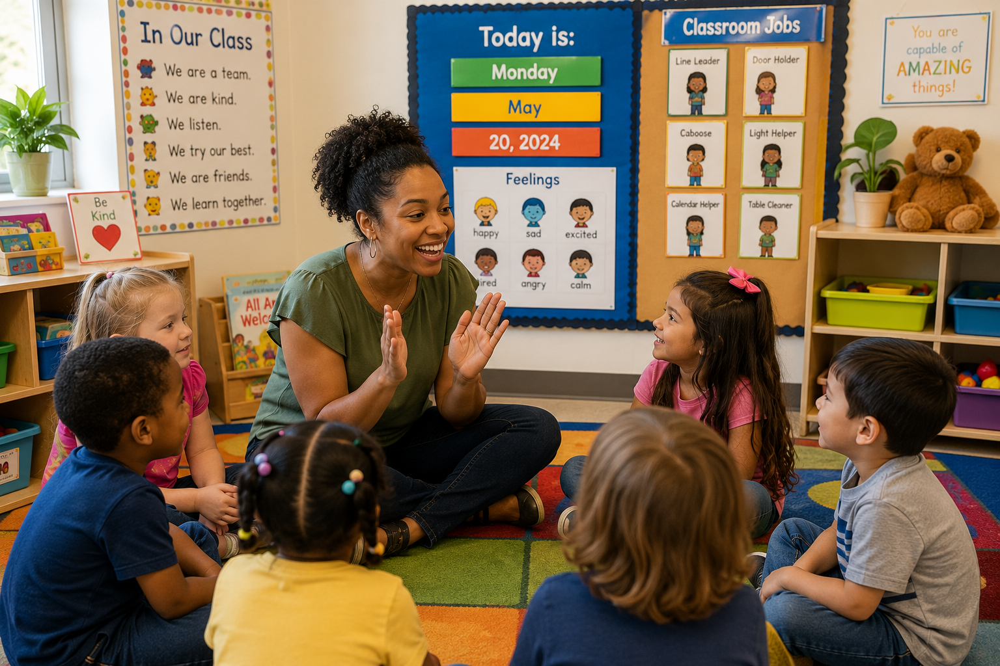

Our Mission
To provide practical, affordable, and developmentally appropriate resources that help teachers create engaging learning experiences while saving valuable planning time.
Little Explorers Learning Hub exists to equip Early Head Start, Head Start, Preschool, and Pre Kindergarten educators with professional resources that encourage curiosity, creativity, confidence, and joyful learning.

Inspiring curiosity through meaningful experiences.
Supporting educators every step of the way.
Every classroom deserves meaningful resources that save time, encourage creativity, and support every child's development.
Teaching is one of the most rewarding professions, but it is also one of the most demanding. Planning engaging lessons, preparing classroom materials, documenting children's growth, and communicating with families all require time and dedication.
Little Explorers Learning Hub was created to make that work easier. Every study, printable, lesson plan, assessment tool, and teaching guide is designed with practical classroom use in mind so teachers can spend less time searching and more time doing what they love most: helping children learn.
Our goal is to provide resources that are developmentally appropriate, research informed, visually engaging, and simple to implement in real classrooms.
Designed by someone who understands the realities of today's classroom.
Every resource is created to support healthy child development.
Easy to implement with minimal preparation.
New resources continue to be added throughout the year.
Everything we create is guided by a commitment to supporting educators, encouraging children's natural curiosity, and building classrooms where every learner can thrive.
To provide practical, affordable, and developmentally appropriate resources that help teachers create engaging learning experiences while saving valuable planning time.
To become a trusted destination where educators find inspiration, professional growth, and classroom resources that positively impact children every day.
Little Explorers Learning Hub continues to expand with new curriculum studies, printable resources, lesson plans, and professional tools for early childhood educators.
Little Explorers Learning Hub was created from a passion for helping teachers spend less time searching and more time teaching.
Research based curriculum studies were added to support planning, professional learning, and classroom instruction.
Printable classroom resources, lesson plans, assessment tools, and teacher supports continue to grow every month.
Our commitment remains the same: creating practical resources that help educators inspire children through meaningful learning.
Teachers wear many hats each day. They plan lessons, organize classrooms, document learning, communicate with families, and create environments where every child feels welcomed and encouraged.
Little Explorers Learning Hub exists to lighten that workload by providing practical, classroom ready resources that educators can use with confidence.
Explore Resources
We believe children learn best through meaningful experiences, play based exploration, positive relationships, and environments that encourage curiosity and confidence.

Play is the foundation of meaningful learning. Every activity should encourage discovery, creativity, and joyful exploration.
Strong relationships between teachers, children, and families create classrooms where everyone feels valued.
Intentional teaching supports children's natural curiosity while building confidence and independence.
Inclusive classrooms celebrate every child's unique strengths, abilities, and background.
As an early childhood educator, curriculum developer, and author, I have spent years working alongside teachers and children while discovering the daily challenges educators face.
Little Explorers Learning Hub grew from a desire to create practical, high quality resources that teachers could trust. Every lesson plan, study, printable, assessment tool, and classroom resource is designed with real classrooms in mind.
Whether you are new to teaching or have years of experience, my hope is that these resources save you time, encourage creativity, and help you build meaningful learning experiences for every child.
Everything we create is designed to help educators spend less time preparing and more time inspiring children.
Resources developed with practical classroom experience.
Activities designed around children's development.
Fresh inspiration for engaging learning experiences.
Resources that strengthen school and home partnerships.
Professional resources that save valuable planning time.
New resources are continually added throughout the year.
Little Explorers Learning Hub continues to expand with new resources, curriculum studies, and classroom materials created for today's educators.
Teaching Resources
Lesson Plans
Printables
Curriculum Studies
Helping educators spend less time searching and more time creating meaningful learning experiences for children.
Our resources are designed for Early Head Start, Head Start, Preschool, and Pre Kindergarten educators.
Yes. We continually expand our collection with new studies, lesson plans, classroom resources, and printable materials.
Absolutely. We welcome suggestions from educators and are always looking for ideas that support real classrooms.
Yes. Every resource is created with children's development, engagement, and meaningful learning experiences in mind.
Be the first to learn about new curriculum studies, classroom resources, lesson plans, and printable materials.
Discover practical teaching resources created to support children, families, and educators every day.